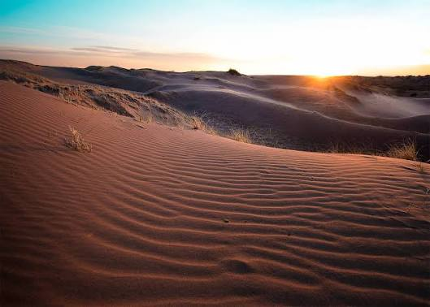

Un pueblo rural rodeado de mesetas y montes, atravesado por el arroyo Tulumaya y con uno de los cielos más limpios de Mendoza.
Alto del Olvido es una localidad del departamento de Lavalle, en la provincia de Mendoza. Tiene un pintoresco paisaje rural que combina mesetas y montes de llanura, con un clima árido y tranquilo, ideal para desconectarse.
La localidad está atravesada por el arroyo Tulumaya, que comienza formalmente en los departamentos de Guaymallén y Maipú y termina en Laguna del Rosario, en Lavalle.
Sus orillas invitan a caminar entre el monte nativo y disfrutar del paisaje.
Uno de los lugares más destacados de su cultura es el viejo puente, que cruza de un lado al otro del arroyo Tulumaya.
Tiene 100 años de antigüedad y fue declarado patrimonio. Es el símbolo del pueblo y una parada obligada para cada visitante.
Se puede acceder a Alto del Olvido por dos rutas provinciales.
Uno de los accesos principales a la localidad.
Conexión entre norte y sur. Lleva a Villa Tulumaya, a solo 6 km.
Actualmente la localidad tiene 642 habitantes. Para lograr un mayor recibimiento turístico, proponemos como proyecto la construcción de un observatorio astronómico, aprovechando la nula contaminación lumínica de la zona.
Sin luces de ciudad, las estrellas se ven a simple vista.
Un nuevo atractivo que trae visitantes y trabajo al pueblo.
Visitas guiadas para escuelas, familias y turistas.